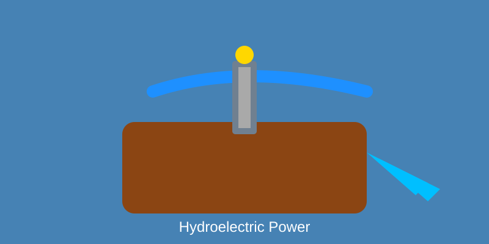

First hydroelectric plant 1882 Appleton, Wisconsin (12.5kW). Three Gorges Dam (22GW) world's largest. Supplies 16% global electricity, dominant in Canada/Brazil/Norway.
Water stored in reservoirs released through penstocks to turbines. Types: impoundment, pumped-storage, run-of-river. Kaplan/Francis/Pelton turbines optimized for head/flow.
| Year | Hydro (TWh) | Growth |
|---|---|---|
| 2020 | 4200 | - |
| 2021 | 4150 | -1% |
| 2022 | 4100 | -1% |
Global Capacity: 1,300 GW
Largest Dam: 22 GW
Capacity Factor: 40-60%
Pumped hydro storage growth, small modular hydro, retrofits. Marine current tech emerging. Expected to remain 12-15% global mix, key for grid stability with variable renewables.